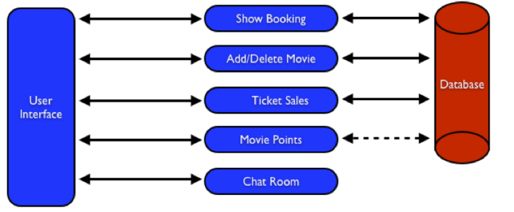
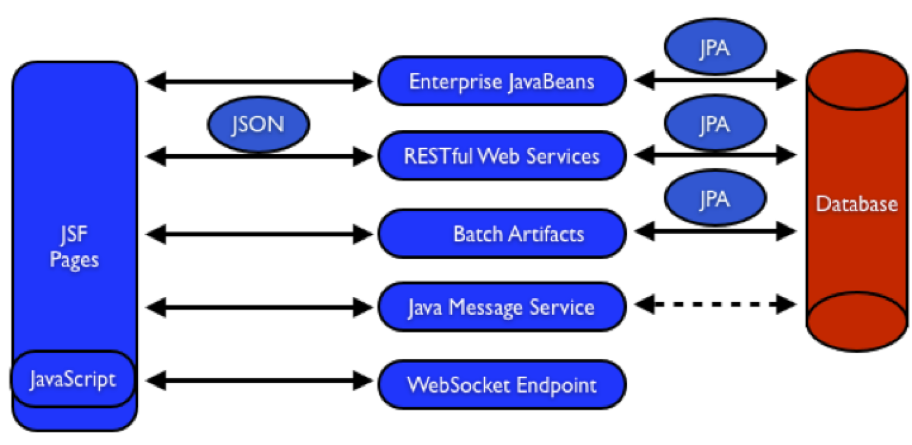

Samples Main Page
Movieplex8: The Java EE 8 Platform Sample Application
This sample application is a typical 3-tier end-to-end
application using the following Java EE 8 technologies:
- Java Persistence API 2.1 (JSR 338)
- Java API for RESTful Web Services 2.0 (JSR 339)
- Java Message Service 2.0 (JSR 343)
- JavaServer Faces 2.2 (JSR 344)
- Contexts and Dependency Injection 1.1 (JSR 346)
- Bean Validation 1.1 (JSR 349)
- Batch Applications for the Java Platform 1.0 (JSR 352)
- Java API for JSON Processing 1.0 (JSR 353)
- Java API for WebSocket 1.0 (JSR 356)
- Java Transaction API 1.2 (JSR 907)
Together these APIs will allow you to be more productive by
simplifying enterprise development.
Detailed instructions about building this sample are available at glassfish.org/hol.
Description
This hands-on lab builds a typical 3-tier Java EE 8 Web
application that allows customers to view the show timings for a
movie in a 7-theater Cineplex and make reservations. Users can add
new movies and delete existing movies. Customers can discuss the
movie in a chat room. Total sales from each showing are calculated
at the end of the day. Customers also accrue points for watching
movies.

The User Interface initiates all the flows in the application. Show
Booking, Add/Delete Movie and Ticket Sales interact with the
database; Movie Points may interact with the database, however, this
is out of scope for this application; and Chat Room does not
interact with the database.
The different functions of the application, as detailed above,
utilize various Java technologies and web standards in their
implementation. The next figure shows how different Java EE
technologies are used in different flows.

The table below details the components and the selected technology
used in its’ implementation.
| Flow |
Description |
| User Interface |
Written entirely in JavaServer Faces (JSF). |
| Show Booking |
Uses lightweight Enterprise JavaBeans to communicate with
the database using Java Persistence API. |
| Add/Delete Movie |
Implemented using RESTful Web Services. JSON is used as
on-the-wire data format. |
| Ticket Sales |
Uses Batch Applications for the Java Platform to calculate
the total sales and persist to the database. |
| Movie Points |
Uses Java Message Service (JMS) to update and obtain
loyalty reward points; an optional implementation using
database technology may be performed. |
| Chat Room |
Utilizes client-side JavaScript and JSON to communicate
with a WebSocket endpoint |
The sample uses the embedded JavaDB database service included
with the GlassFish server. ????
The sample is built and deployed as a WAR file.
Key Features
This sample demonstrates the following features of the platform:
- Java EE 7 Platform (JSR 342)
- Maven coordinates
- Default DataSource
- Default JMSConnectionFactory
- Java Persistence API 2.1 (JSR 338)
- Schema generation properties
- Java API for RESTful Web Services 2.0 (JSR 339)
- Client API
- Custom Entity Providers
- Java Message Service 2.0 (JSR 343)
- Default ConnectionFactory
- Injecting JMSContext
- Synchronous message send and receive
- JavaServer Faces 2.2 (JSR 344)
- Contexts and Dependency Injection 1.1 (JSR 346)
- Automatic discovery of beans
- Injection of beans
- Bean Validation 1.1 (JSR 349)
- Integration with JavaServer Faces
- Batch Applications for the Java Platform 1.0 (JSR 352)
- Chunk-style processing
- Exception handling
- Java API for JSON Processing 1.0 (JSR 353)
- Streaming API for generating JSON
- Streaming API for consuming JSON
- Java API for WebSocket 1.0 (JSR 356)
- Annotated server endpoint
- JavaScript client
- Java Transaction API 1.2 (JSR 907)
Building, Deploying, and Running the Application
Perform the following steps to build, deploy, and run the
application:
- Set up your build environment and configure the application
server with which the build system has to work by following the
common build
instructions.
samples_install_dir is the sample
application base directory. Go to: samples_install_dir/javaee7/platform/movieplex7.
- Build the sample application by running the
mvn package
command from a command line terminal.
- Deploy the sample application by running the
asadmin
deploy --force target/movieplex7.war command from a
command line terminal.
- The front page of this sample is at
http://localhost:8080/movieplex7
(The port number might vary.)
- Use the
mvn clean command from a command line
terminal to clean up the target directory.
- Undeploy the sample application by running the
asadmin
undeploy moviexplex7 command from a command line
terminal.
Troubleshooting
If you have problems when running the application, refer to the troubleshooting
document.
Copyright © 2017 Oracle and/or its affiliates.
All rights reserved.